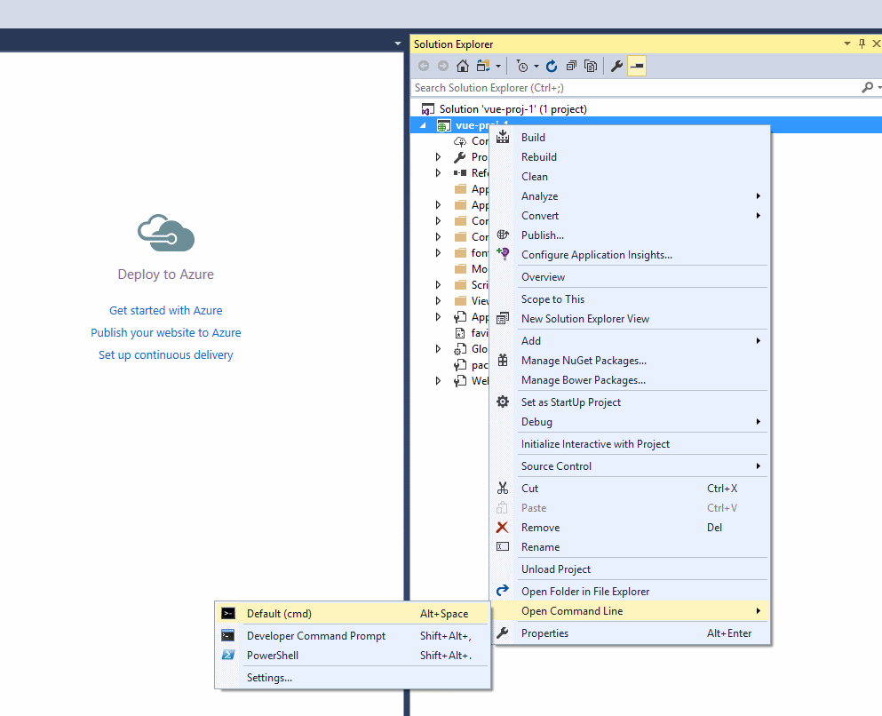
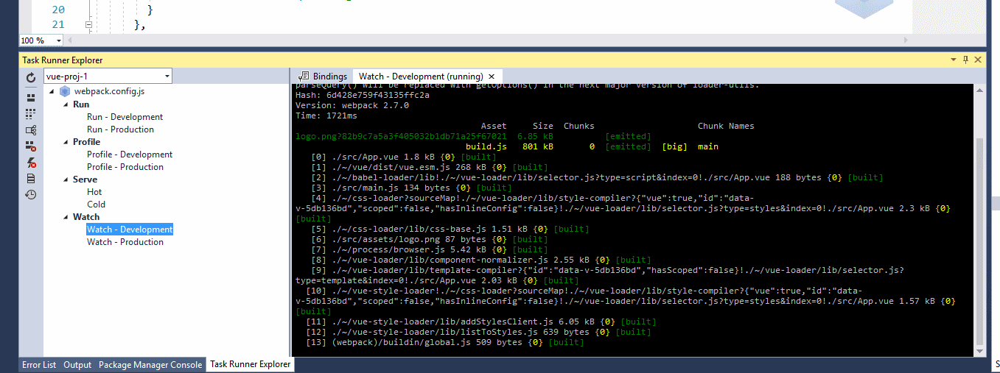

Tamir Weiss - Published on
Open Windows Command Line and install the vue-cli globally with npm. Vue-cli makes setting up the Vue project very easy.
npm install -g vue-cli

There are a number of templates that vue-cli offers that help with creating Vue projects at the moment (simple, webpack-simple, webpack, browserify-simple, browserify). To demonstrate the basic development workflow the webpack-simple template serves very well.
Right click the website project in Visual Studio and select Open the Command Line. Create new Vue project using the following statement:
vue init webpack-simple
You will be asked a number of questions:
npm install
<div id="app" class="row">
</div>
<script src="~/dist/build.js"></script>
Tasks created by the vue-cli will be available on the list. Double click the Watch - Development task within webpack.
